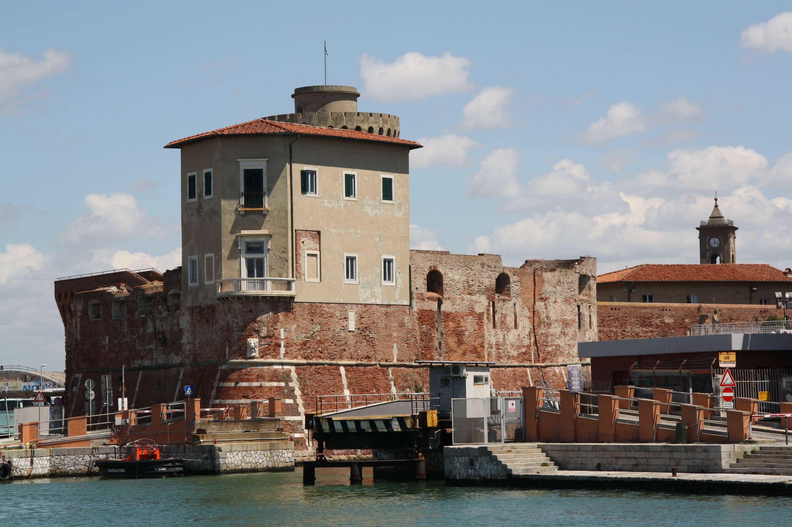
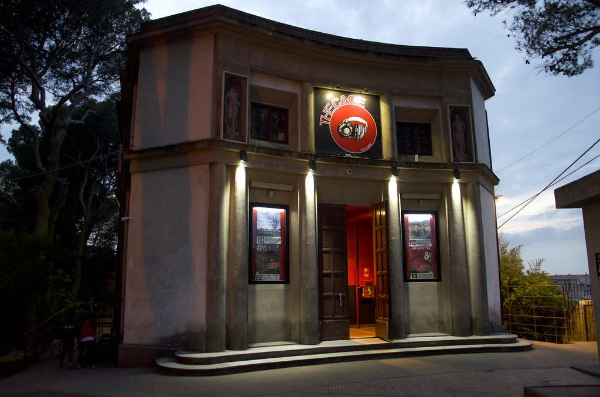
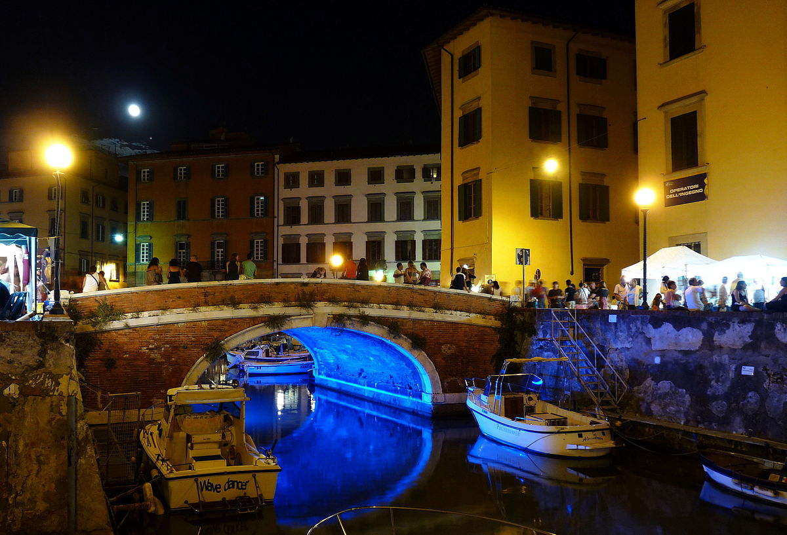
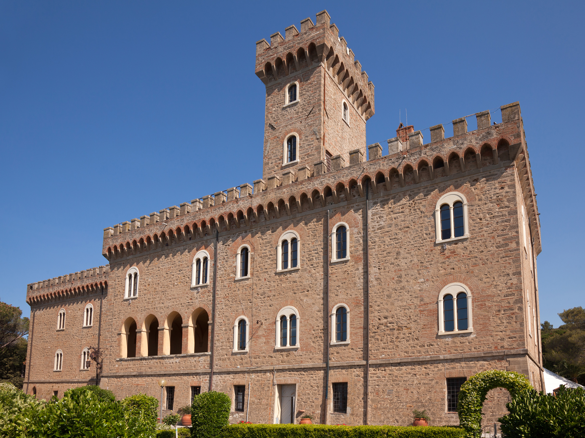
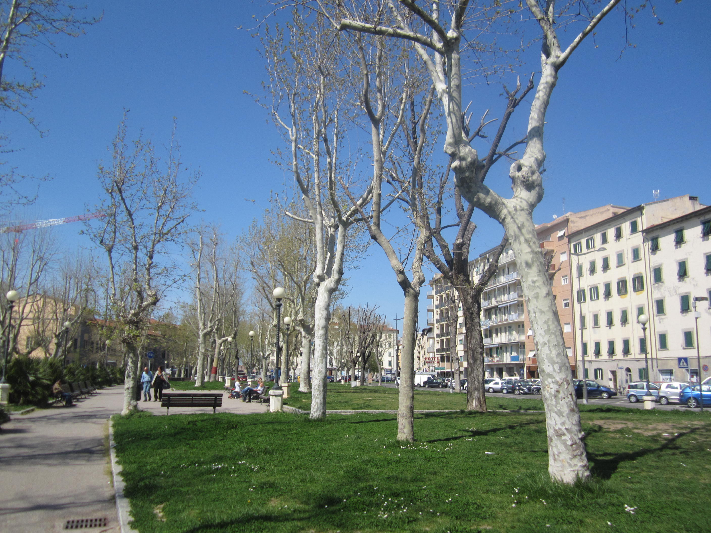
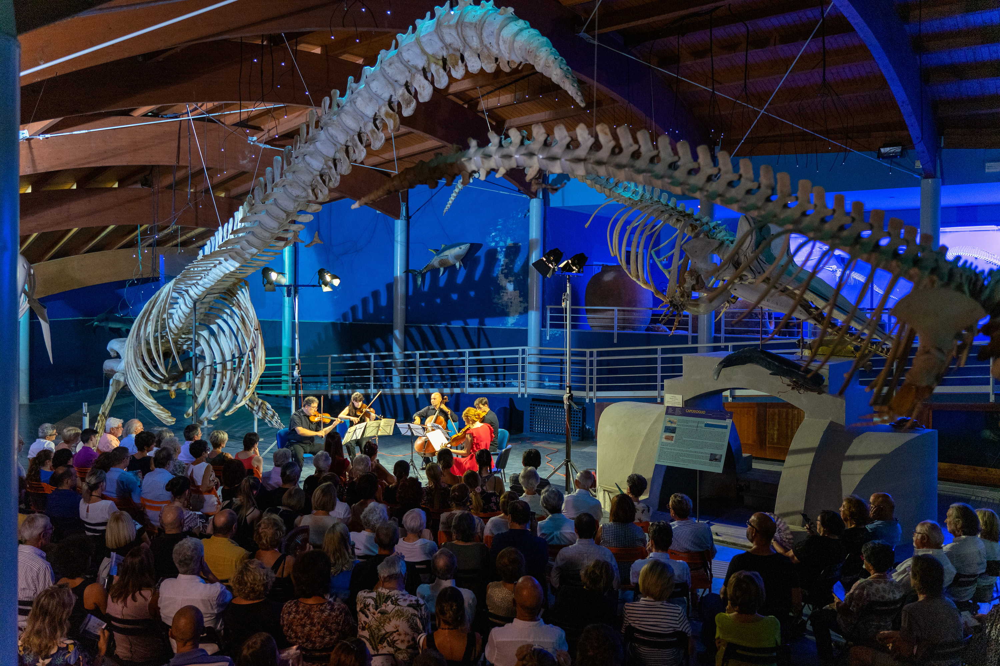

Fortezza Vecchia

La fortezza vecchia è uno dei monumenti più rappresentativi di Livorno: viene vista come
anima e storia della città. Nasce come antica fortificazione da cui si sviluppò il primo
centro urbano, ma le sue radici sono più complesse. Solamente a partire dagli anni
settanta, dopo essere stata profondamente danneggiata dalle conseguenze della seconda
guerra mondiale, venne restaurata e rinominata Fortezza Vecchia. Oggi viene gestita in
concessione dall’Autorità di Sistema Portuale del Mar Tirreno Settentrionale ed è a
servizio di iniziative ed eventi che hanno lo scopo di valorizzare la città e la stessa
Fortezza, come simbolo indiscusso di Livorno.
- 10 giugno | Massimo Ranieri - "Sogno o son desto"
- 23 giugno | Ennio Morricone - "Morricone film history"
- 9, 10, 17 luglio | Mascagni festival
- 14 luglio Umberto Tozzi
- 20 luglio | Paolo Fresu in collaborazione con Pisa Jazz
- 22 luglio | Sebastiano Lo Monaco - "Io e Pirandello"
- 27 luglio | Danilo Rea
The Cage

The Cage nasce nel 2002 con l’intento di regalare alla città un vero “Live Music Club” che
avrebbe dovuto promuovere arte, musica e spettacolo. Con il successo che saliva a
dismisura c’era l’esigenza di darsi una forma giuridica che potesse fornire ancora più
visibilità e che potesse porre le basi per una carriera solida e seria; in questo modo, nel
2004 nacque l’Associazione Culturale The Cage che ha l’obiettivo di offrire supporto
manageriale, tecnico e logistico a tutte le produzioni cinematografiche che passano da
Livorno. Inoltre, si impegna a gestire e coordinare molte tra le produzioni musicali più
impegnative.
- 5 maggio | Coez
- 7 maggio | Tonino Carotone
- 13 maggio | Tossic
- 14 maggio | Samuel
- 20 maggio | Owen
- 20 luglio | Bobo Rondelli & Surrealistas
- 6, 7 agosto | Pentagram e Voivod
Effetto Venezia

Effetto Venezia è una manifestazione nata nel 1986 su iniziativa dell’Amministrazione
Comunale di Livorno che aveva come scopo quello di promuovere la creatività artistica
durante un certo periodo dell’estate, organizzando eventi e spettacoli nel quartiere più
suggestivo di Livorno: “La Venezia”. Da allora la festa è cresciuta sotto ogni profilo e, in
oltre trent’anni di storia, Effetto Venezia ha ospitato artisti, personaggi e compagnie
artistiche di grande nome, diventando l’appuntamento più atteso dell’estate. Un momento
di attrazione e divertimento sia per i livornesi che per i numerosi turisti che si trovano in
città per passare una giornata al mare. Inoltre, rappresenta anche un palcoscenico
importante per tanti artisti emergenti, locali e non.
- 4 agosto | Faya + Ewa
- 5 agosto | Melancholia
- 6 agosto | Irene Grandi
- 7 agosto | Coro Spring Time & Monday Girls
- 8 agosto | Alice
Castello Pasquini

Il Castello Pasquini è assoluto protagonista della costiera più famosa di Livorno: “Il
Romito”. Ergendosi maestosamente sul mare, domina la scena marittima della città, ed è
una delle attrazioni più affascinanti e caratteristiche livornesi. Accoglie importanti
manifestazioni espositive e culturali e, la sua recente installazione nel parco adiacente di
un teatro, dà la possibilità di accogliere manifestazioni convegnistiche di grande rilievo,
oltre agli eventi musicali che ogni anno portano sempre più turisti.
- 27 luglio | Fabri Fibra
- 5 agosto | Sangiovanni
- 11 agosto | Bresh Oro Blu Tour
- 25 agosto | Elisa
Piazza Mazzini

Si tratta di una delle vie più popolate in città. La recente ristrutturazione ha aperto le porte
a un grande polo multifunzionale che ridisegna la città di Livorno grazie anche alla location
stupenda a due passi dal centro storico e affacciata sul mare. Negli ultimi anni si è
dedicata allo sviluppo di residenze, attività commerciali, di servizio e di eccellenze locali,
ed è per questo che è un’attrazione primaria per i cittadini residenti e non. Offre un ampio
spazio alla realizzazione di eventi e concerti musicali, il tutto contornato da locali sempre
aperti che permettono di sedersi e godersi la serata al meglio.
- 1 giugno | Bandabardò & Cisco
- 2 giugno | Tananai
- 3 giugno | Ditonellapiaga
- 1 luglio | Ariete
- 2 luglio | Frah Quintale
- 3 luglio | Zen Circus
Livorno Music Festival

Il Livorno Music Festival ha preso piede solamente negli ultimi anni, nei quali c’è stato un
crescente interesse per tutte le attività che questo piccolo festival locale propone. Oltre a
presentare ben venti concerti nei luoghi culturalmente più significativi della città, infatti,
offre anche venticinque corsi di perfezionamento strumentale e interpretazione musicale,
cercando di promuovere scambi culturali internazionali. I corsi si rivolgono in particolare a
giovani e giovanissimi talenti, con l'obiettivo di riunire musicisti da tutto il mondo e farli
vivere a stretto contatto con i grandi nomi della scena musicale internazionale dando loro
anche l'occasione di suonare con gli artisti nel programma dei concerti.
- 17 agosto | Tango all'opera
- 19 agosto | Fiatimania
- 20 agosto | Incanto
- 21 agosto | Souvenir De Florence
- 22 agosto | La Divina Commedia illustrata da Salvador Dalì
- 23 agosto | Omaggio a JSB
- 25 agosto | Listz il Divo
- 26 agosto | Dai Rolling Stones ai Metallica
- 27 agosto | Piazzolla 100
- 29 agosto | Archinsieme
- 30 agosto | Uni-corno
- 31 agosto | Minstrels
- 1 settembre | Sogno di una notte di fine estate
- 2 settembre | Le piace Brahms?
- 3 settembre | Un pianoforte per Battiato e Morricone
- 4 settembre | Sax Tonic
- 5 settembre | Concerto all'alba
- 6 settembre | Suonare insieme